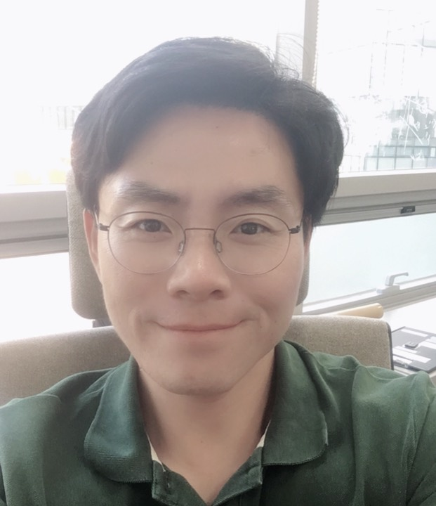

Find the question
Turn a student’s genuine interest into a focused, answerable research question.
Cognitive Neuroscientist · Educator
I study how experience changes memory—how the brain stabilizes, differentiates, and reorganizes what we learn.

Student research mentoring
I guide high-school students in the US, Korean students studying in the US, and students at international schools in Korea and across Asia through original research: finding a real question, designing a study, analyzing data, and writing it up to publication standard. The same training that led to papers in PNAS and Nature Communications now goes into helping students build research that stands out in US college admissions.
Turn a student’s genuine interest into a focused, answerable research question.
Choose methods, data, and analyses the way a working scientist would.
Run the analysis and reason carefully about what the results do and do not show.
Draft, revise, and prepare the paper for journals, competitions, or applications.
L.K., high-school student, international school in Bangkok · Experimental study of how human-like AI shapes source memory
Y.S., high-school student · Secondary analysis of a six-school U.S. survey (N = 662)
Research focus
My work connects cognitive theory, human neuroimaging, and computational approaches to explain how memories compete, separate, and support new knowledge.
How events are represented, retrieved, and updated across experiences.
How violated expectations reshape competing memory representations.
How REM sleep supports neural differentiation and memory stability.
How implicit learning and confidence interact with decision processes.
Culture-Literacy Research Institute
Cognitive Science Research Group, Korea Brain Research Institute
Department of Psychology, University of Oregon · Advisor: Brice A. Kuhl
PhD, Psychology
Princeton University · Nicholas B. Turk-Browne and Kenneth A. Norman
MA, Psychology
Princeton University
MA, Psychology
Yonsei University · Do-Joon Yi
BA, Psychology
Yonsei University
Peer-reviewed work
Research on memory competition, prediction error, neural differentiation, and hippocampal remapping.
McDevitt, E. A., Kim, G., Turk-Browne, N. B., & Norman, K. A. · Journal of Cognitive Neuroscience, 38(1), 126–143.
Wanjia, G., Favila, S. E., Kim, G., Molitor, R. J., & Kuhl, B. A. · Nature Communications, 12, 4816.
Youn, Y., Kim, M., Kim, J., Kang, B. K., & Kim, G. · Journal of Biomedical Engineering Research, 42(4), 150–158.
Kim, G., Norman, K. A., & Turk-Browne, N. B. · Cerebral Cortex, 29(6), 2682–2693.
Kim, G., Norman, K. A., & Turk-Browne, N. B. · Journal of Neuroscience, 37(8), 2022–2031.
Kim, G., Lewis-Peacock, J. A., Norman, K. A., & Turk-Browne, N. B. · PNAS, 111(24), 8997–9002.
Kim, G., & Yi, D.-J. · Cognitive Science, 21(4), 603–625.
Conferences
Selected talks, posters, and abstracts across sleep, episodic memory, visual cognition, and applied deep learning.
Houston, Texas · Published abstract
Philadelphia, Pennsylvania · Program
Virtual conference · Abstract
Virtual conference · Program
Sungkyunkwan University, Suwon
St. Pete Beach, Florida
Beyond the lab
Writing, lectures, and interviews that connect neuroscience with reading, investing, social life, and everyday memory.
The Korea Times Chicago · Opinion
Dec 2022Naeum Plus · Seoul National University Bundang Hospital
Nov 2022Seoul Economic Daily · Neuroscience column
Sep 2022The Liverary · Public video lecture
Jan 2022Electronic Times · Featured researcher interview
Academic contributions
A continuing commitment to making rigorous cognitive science useful to students and wider communities.
Contact
For mentoring consultations, research, teaching, or writing inquiries, email is the best way to get in touch.